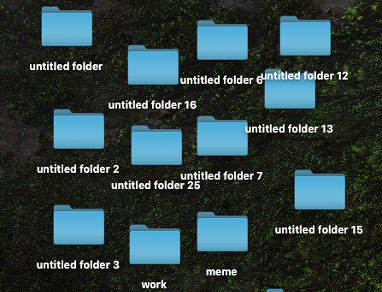
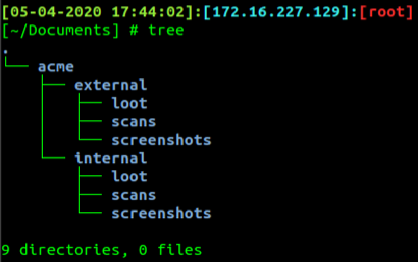

1.)MIGLIORARE IL PROPRIO WORKFLOW DI LAVORO
Ogni pentester o ethical hacker e' sempre alla ricerca di miglioramenti della qualità del suo operato. Che si tratti di script, automatizzare alcuni processi banali o cercare di aumentare la produttivita' lavorativa, è nella nostra indole lottare costantemente per migliorare le cose.
Un modo per aumentare la qualita' del lavoro è attraverso dei miglioramenti del nostro workflow. Molte volte, semplici modifiche del nostro workflow quotidiano possono fare la differenza quando si tratta di gestione del tempo, organizzazione e denaro. Alcune piccole modifiche nel tempo possono migliorare la produttività, la soddisfazione sul lavoro e persino il tempo libero per altre attività.
Ecco alcune cose che abbiamo scoperto nel corso dei nostri anni lavorativi e che pensiamo possano aiutare anche voi nel .
AVERE UN OTTIMALE AMBIENTE DI LAVORO!
Siate Organizzati. Prima ancora di iniziare un nuovo progetto, createvi una vostra struttura gerarchica del lavoro. E' importante avere bene a mente il vostro target, il lavoro che doveste svolgere e come ottimizzare il tutto. Per intenderci non come il seguente esempio.
Createvi la vostra griglia mentale e poi mettetela giu, organizzata e compatta, esempi: una cartella con i tool usati, una cartella con i screenshot, i scan eseguiti, etc.
Ecco un esempio:
